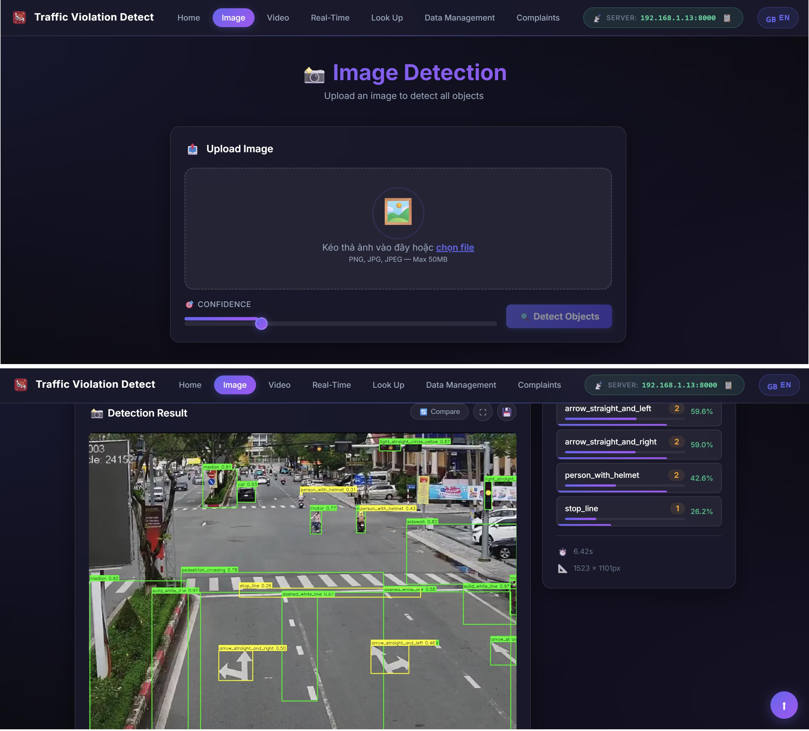
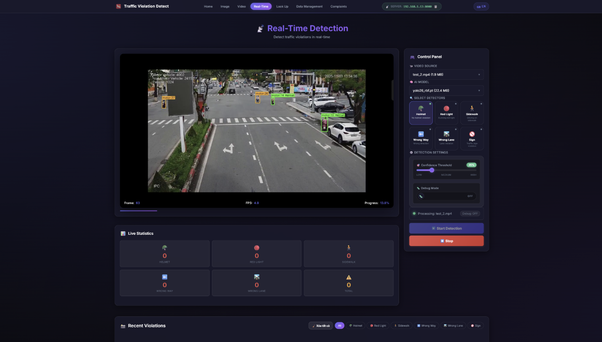
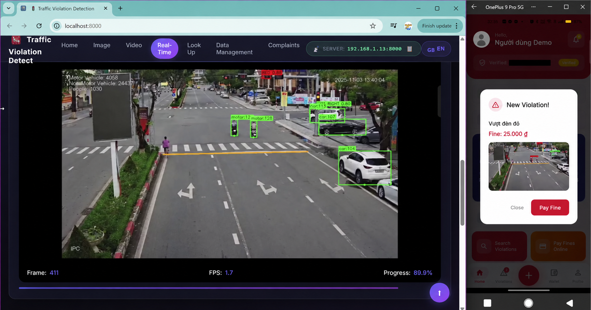
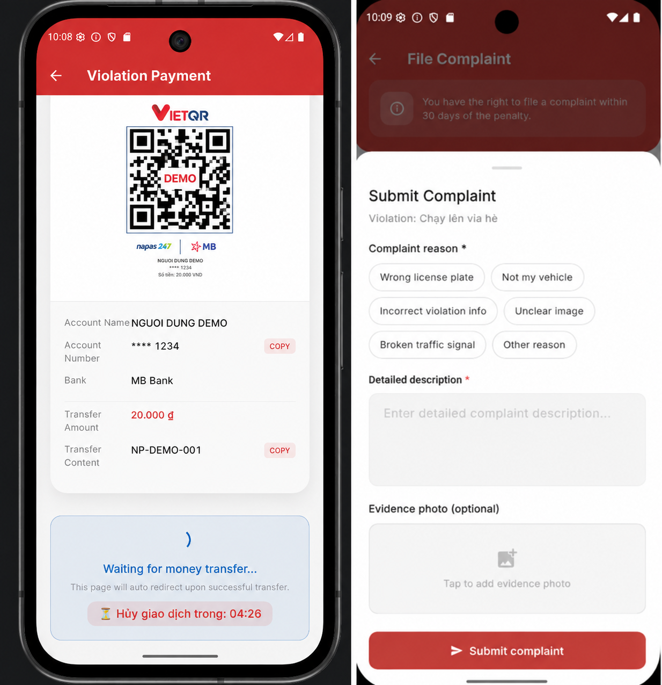

AI Research Prototype · Vietnam
Quan sát giao thông.
Giải thích vi phạm.
Một pipeline end-to-end kết hợp instance segmentation, tracking và luật hình học để tạo bằng chứng có thể kiểm tra lại.
Static product preview · Backend AI không chạy trên GitHub Pages
Kết quả thực nghiệm
Được xây dựng từ dữ liệu giao thông Việt Nam.
- 4.482
- ảnh gốc
- 47.039
- instance annotations
- 86,9%
- mAP50 bounding box
- 85,5%
- mAP50 segmentation
- 7,2 ms
- inference / ảnh trên A100
Violation intelligence
Sáu nhóm hành vi.
Một lớp nhận thức chung.
YOLOv26s-seg nhận diện 40 lớp đối tượng; ByteTrack giữ định danh; mỗi module đưa ra quyết định bằng điều kiện hình học rõ ràng.
- 01Không đội mũ bảo hiểmNgười · vùng đầu · xe máy
- 02Vượt đèn đỏĐèn tín hiệu · vạch dừng · quỹ đạo
- 03Đi lên vỉa hèMask phương tiện · vùng cấm
- 04Đi ngược chiềuLịch sử tracking · hướng luồng xe
- 05Sai làn, đè vạchLàn đường · vạch kẻ · vị trí xe
- 06Vi phạm biển báoBiển cấm · vùng hiệu lực · chuyển động
Web control room
Từ một frame đến một hồ sơ bằng chứng.


Citizen touchpoint
Bằng chứng đến đúng người, đúng thời điểm.
Ứng dụng Flutter nhận cảnh báo, hiển thị chi tiết vi phạm và kết nối trực tiếp tới luồng thanh toán hoặc khiếu nại.
- Firebase Authentication & hồ sơ phương tiện
- FCM + WebSocket real-time
- VietQR/SePay và webhook đối soát
- Khiếu nại kèm ảnh bằng chứng


Resolution workflow
Thanh toán minh bạch. Khiếu nại có bằng chứng.
Webhook cập nhật trạng thái giao dịch; yêu cầu khiếu nại tạm khóa thanh toán để quản trị viên đối chiếu trước khi ra quyết định.
Dữ liệu định danh và QR trong ảnh demo đã được ẩn danh.
Architecture